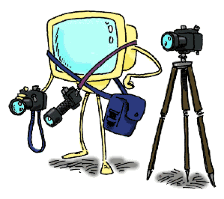
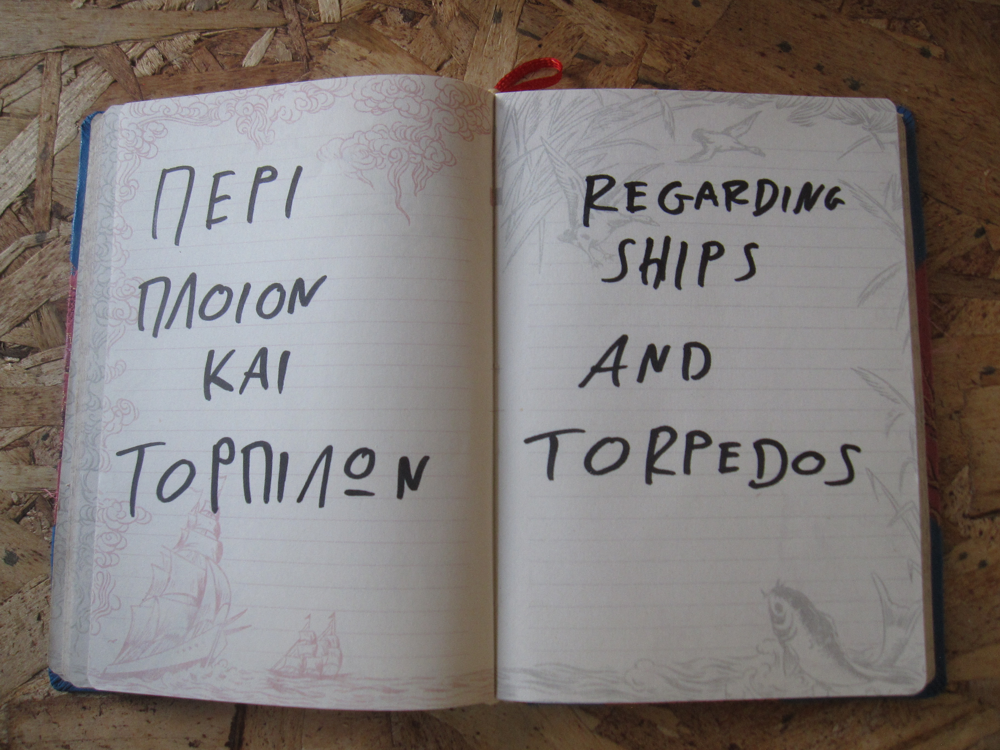
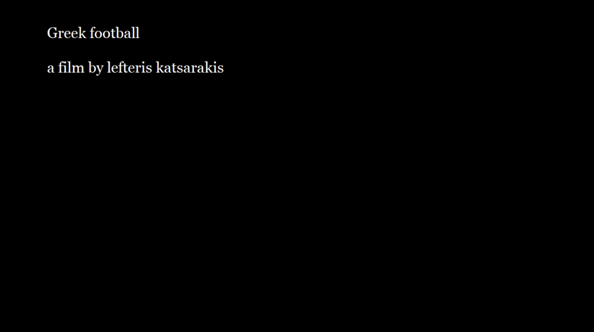
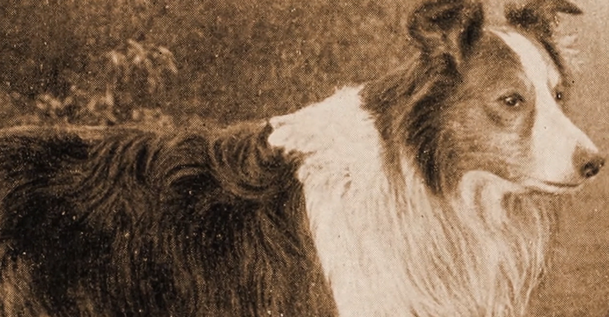
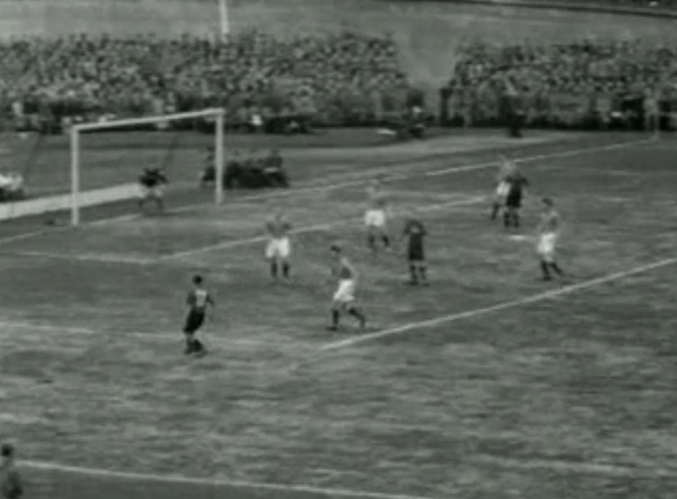
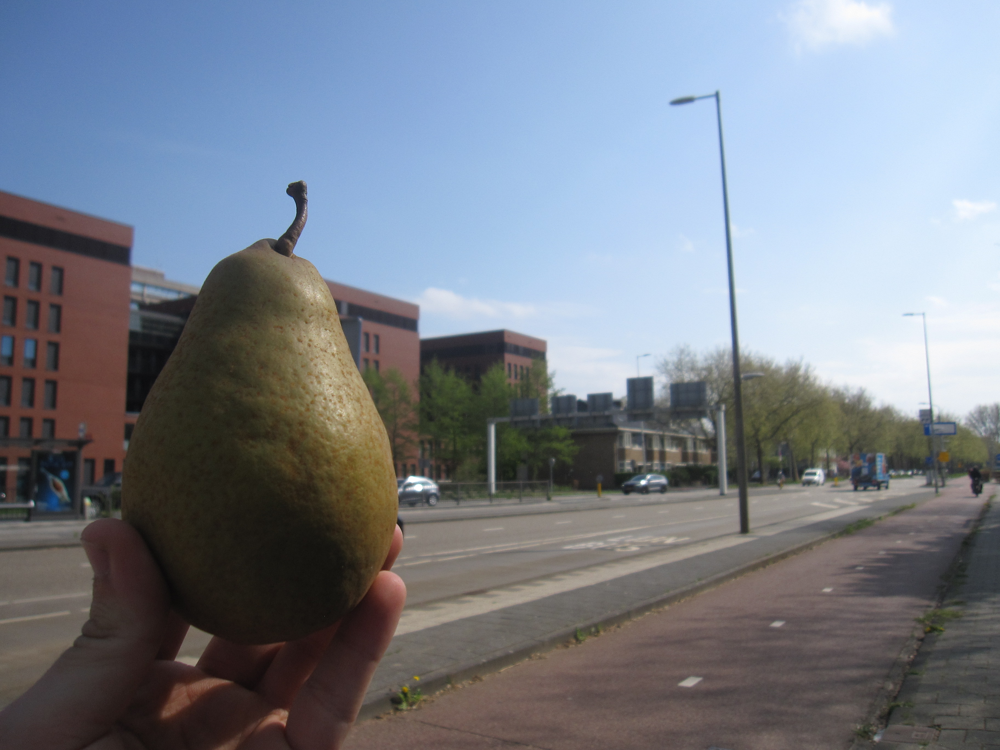
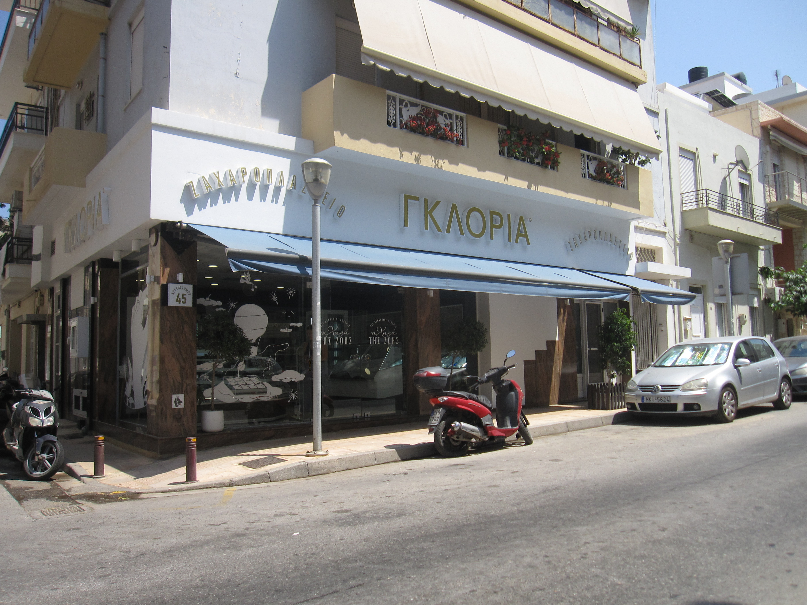
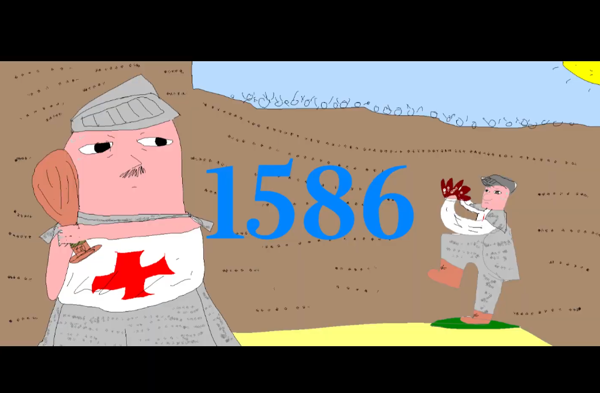

a bring your son to work day turned into a documentary about my father, working in the environment he loves most
shot on late august in 2024
watch it here
a guide through the Amsterdam Maritime museum voiced over with a story regarding ships and torpedoes
watch it here


A mockumentary made exclusively from dutch archival footage about a fictional greek football team that made it into the top 4 finals in Amsterdam
and the first person view of the documentarian that followed them
the film is screened with a real time narration in the spirit of football shoutcasting
will be available to watch soon...

a mini documentary series about a pear that becomes a portal when you bite into it and the eventual demise of the whole experience
pear portal pilot
A video about a bad bakery and a good bakery (Language: Greek, english subtitles to be added)
watch here
self explanatory
watch it here